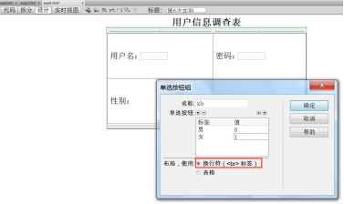
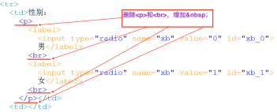

实验6表单
² 实验内容
n Dreamweaver cs6软件创建站点
n 创建表单，熟练掌握表单各种控件的设计
n 掌握form控件各属性的意义和使用
n 进一步熟悉表格的使用（合并单元格）
n 灵活使用代码视图和设计视图
² 实验要求
n 掌握创建Dreamweaver cs6站点
在开始网页设计之前先创建站点。本次实验提供了一个文件夹”实验6”，将它创建为站点。文件夹中有一个网页”exp6.html”，将它复制一份，修改为自己的学号.html。以下所有步骤都是对“学号.html”进行操作。
n exp6.html文档已经设计好了一张表格，代码视图和设计视图如图1所示。
图1 已设计好的表格
n 在代码视图插入表单
在<table>和</table>之间插入<form>标记，设计action属性为"mailto:xxyy@163.com",设计method属性为"post"，设计name属性为”form1”，设计enctype属性为"text/plain"（提示：<form>标记写在<table>标记的后一行，</form>标记写在</table>标记上一行）
n 插入文本域
1、在表格的第1行第1个单元格输入“用户名：”，再打开“插入”菜单à“表单”à“文本域”，如图2所示。
图2 使用设计视图插入文本域
2、在设计视图，选择文本域，在“属性”面板，调整“字符宽度”为“8”
图3 使用属性面板
n 插入文本域（密码）
在表格的第1行第2单元格，输入“密码：”，选择“插入”à“表单”à“文本域”，步骤如图2所示。在设计视图选择该文本域，在属性面板选择“密码”，调整“字符宽度”为“8”，如图3所示。
n 插入单选按钮组
1、在表格的第2行第1个单元格，输入“性别：”，选择“插入”à“表单”à“单选按钮组”，如图4所示。
2、在设计视图看到“性别：”、“男”、“女”单选按钮是上下排列，删除代码视图中的<p>和<br>标记，如图5所示。

图4 插入单选按钮组

图5 单选按钮组代码
n 插入列表
1、在表格的第2行第2个单元格，输入“籍贯：”，选择“插入”à“表单”à“选择（列表/菜单）”；
2、选择列表，在属性面板按图6所示进行修改。
图6 列表的属性面板
n 插入多行列表
1、在表格的第3行第1个单元格，输入“政治面貌：”，选择“插入”à“表单”à“选择（列表/菜单）”；
2、选择列表，在属性面板按图7所示修改
图7 多行列表的属性面板
n 插入文本域
1、在表格的第3行第2个单元格，输入“留言：”，选择“插入”à“表单”à“文本区域”；
2、在属性面板，将“行数”修改为“4”。
n 插入文件域
1、选择表格的第4行，将第4行2个单元格合并为1个单元格，如图8所示。（在设计视图，属性面板，选择左下角一个图标；代码为：
<tr>
<td colspan="2">相片：</td>
</tr>）
2、选择“插入”à“表单”à“文件域”；
n 插入按钮
1、选择表格的第5行，将第5行2个单元格合并为1个单元格；
2、选择“插入”à“表单”à“按钮”，在属性面板将按钮改为“重设表单”；再插入一个按钮，在属性面板将按钮改为“提交表单”
图8 表格第4行合并单元格
n 最后完成效果
最后完成效果如图9所示
图9 最后完成效果
² 额外练习
n 最后完成效果
再制作一张表单，如图10所示。该表单全部使用html5新增的输入类型（email类型、url类型、number类型、date类型、color类型），以及使用fieldset标记、legend标记
图10 额外练习效果图